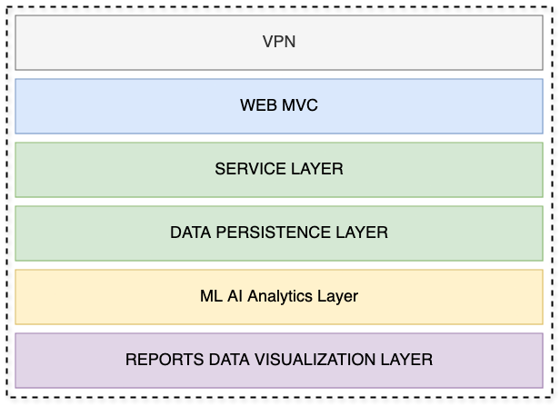
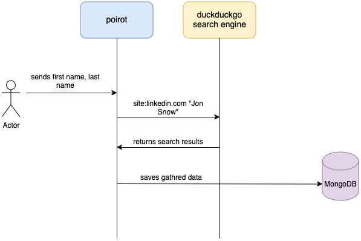

Project Name
Poirot, like famous detective Hercule Poirot
High Level design

VPN
Gathering person's information not always legally allowed or person's accreditated task. It is quite important to hide searcher's information. VPN helps to give a solution for this requirement.
Gewirtz (2024) explains: "The purpose of a VPN is to provide you with security and privacy as you communicate over the internet. Most of the internet's core protocols (communication methods) were designed to route around failure, rather than secure data. While some standards have developed, not all internet apps are secure. Many still send their information without any security or privacy protection whatsoever. This leaves any internet user vulnerable to criminals who might steal your banking or credit card information, governments who might want to eavesdrop on their citizens, and other internet users who might want to spy on you for a whole range of nefarious reasons."
If a researcher logged in into LI account and looks for user's profile, LI notifies a person what a "searcher" was looking his profile. Using VPN we will hide part of such information. In addition, using Google Dorks we gather information without showing up our identity to the person of interest.
Software requirements
Use cases:
As a user I would like to be able to gather person's information on LinkedIn
As a user I would like to be able to gather person's information on Facebook
As a user I would like to persist gathered information into database
As a user I would like to use CRUD repository
As a user I would like to get REST API for CRUD operations
Introduction
As part of fight with misinformation, disinformation and fake news detection is one of the required steps are to get knowledge about person of interest. Existing OSINT tools can bring problems related to security or lack of maintenance. The purpose of this project to create a suitable solution. Product scope is having MVC layer, Business layer & Persistence layer. However, it will not have a data analytics and data visualization layers.
Functional Requirements
External Interface Requirements
User Interface is a Swagger pages which make call to the backend functionality.
Non-functional Requirements
Security
Capacity - ideally storage should be dynamically allocated, aws s3 is a good candidate. For the capstone purposes it is enough to have 250Gb.
Compatibility - minimum requirements for hardware are: RAM 8GB, CPU Apple M1, 8 Cores.
Reliability and availability - response for each request should be persisted. DB should have a backup last 24 hours. Each microservice should implement its healthcheck, for cluster management.
Scalability - the minimum number of pods is one, maximum is 3. k8s configured for scale up or scale down.
Maintainability - CI/CD triggered on each commit. In addition, on master merge triggers a redeploy logic. In addition, part of CI process added logic of checking dependencies updates and security code scanning.
Usability - a service exposes Swagger, accepts curl commands as well.
Project Resources Resources Identified
A computer a main source of machinery. Text editor or IDE to write code, edit documentation. Browser - a firefox or chrome. To surf internet. Internet connection - to do a research VPN - for secure connection outside the world. Any VPN is suitable, in my case i use Surfshark. A person with required skill set (me) Time - entire project takes 6 weeks, each week is intended to Specific Sprint. A lenght of each Spring is exactly one week long.
Challenges gathering facebook information
Facebook requires to be registered in order to get user's information. Registration allow to sources to know who is gathering information. Our goal to expose as little as possible information for anybody.
So, first we do a google dorks as site:facebook.com "John Doe". It brings us a search page which we have to scrap.
One of the scapping results is user's profile URL which contains information related to username. Username can be as same
as a user's first and last names or different. In addition, we can also find userID info, which can be useful.
Next challenge is to parse search results and get valuable information. Fortunately, there are a lot of available libraries which helps us to do it.
During the number of ddg request I got: "Please complete the following challenge to confirm this search was made by a human" Basically it means I cannot automate web scrapping using current approach.
Management of Resources
Time
The longevity of the project is about 6 weeks. Each week 15 hours of work.
Raw materials /software to be used
IDE - Intellij, java 17, python 3, docker, macOS, firefox as a browser, VPN - surfshark
Docker, MongoDB, Spring Boot framework, gradle, docker-compose
Java is good language, I am familiar with it, 17 version is a minimum version that requires Spring Boot.
Docker is a technology which makes possible to run application as a service. Using k8s makes to manage our cluster
of microservices if we need to scale. In general using docker images gives us ability in matter of seconds to redeploy
our application for more newest version.
Gradle is a build tool. To build a project we have two options: maven or gradle. Gradle is more modern building tool.
MongoDB is chosen because it is document database, allows us to save data simply as json file. To use relational database
is not suitable for this kind of project due to the data model. In addition to scale not relational database is much easier
that relational.
Human resources
Me and Professor as mentor and adviser. I am going to implement this project.
Machinery and equipment
MacBook AIR it is what I have.
Financial Resources
A cost of the project is the much as 300 usd.
Infomration and data
Using duckduck search engine, Google Scholar and google dorks. Using google requires to be loged in, which not serves well for our porposes, duckduck is allows to make search queries anonymously. Also any information used or looked at mentioned in References.
Gathered information saved in MongoDB.
Software Requirements and Specification
Software Requirements
Should expose REST API in order to get input from the user like first name, last name, email, location Optional: email, location
Should save gathered information about a person of interest.
Should expose REST API for CRUD operations
Should be implemented as microservice(s) and packeged as a Dockerfile.
Code should be kept in github repository
Software Design Document
** Gathering Flow **

Interface of REST CRUD operations
Create operation puts a new document/entry into database/collection.
Read operation gets a document/entry from database/collection
Update operation changes property(-s) of the document/entry
Delete operation deletes a document/entry from the database/collection
Controllers
Person's information Gathering Controller
CRUD Controller
Repositories
In the world of Spring Boot a repository is an interface which abstracts database operations.
- FaceBook Repository
List of allowed operations
Saves a given entity
Gets the entity by ID
Gets all entities by paging
Deletes the given entity
- LinkedIn Repository
Data Access Objects
Person
-
Location
-
Alumni
-
Image URL - for reverse search
-
First Name
-
Last Name
-
Phone
-
Email
-
Follows - a counter
-
Connection #
-
Works for
-
LinkedIn URL
If we get status=999
!archivemd ${https://www.linkedin.com/in/ashley-hume-5733b345}
https://archive.md/https://www.linkedin.com/in/ashley-hume-5733b345
https://archive.md/https://www.facebook.com/jonsnowandassociates/about
or
https://translate.yandex.com/translate
References
David Gewirtz (May 28, 2024). What is a VPN and why do you need one? https://www.zdnet.com/article/what-is-a-vpn-and-why-do-you-need-one-all-your-virtual-private-network-questions-answered/
Ishan Oshada GDorks github repository https://github.com/Ishanoshada/GDorks
Spring Boot - data repository https://docs.spring.io/spring-data/data-commons/docs/1.6.1.RELEASE/reference/html/repositories.html